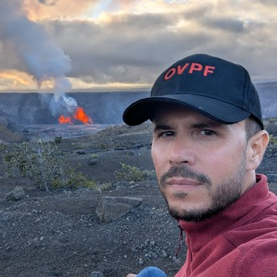

 |
Seismologist, CNRS research scientist Deputy director of the Piton de la Fournaise Volcano Observatory, Institut de Physique du Globe de Paris Plaine des Cafres, Réunion Island (map) E-mail: duputel [at] ipgp . fr ORCID: 0000-0002-8809-451X Google Scholar: profile GitHub: zduputel |
RESEARCH INTERESTS My research aims to understand how volcanoes and faults work and how they relate to seismicity. This knowledge helps improve the monitoring and anticipation of these phenomena. I am particularly interested in magma transport, volcanic flank instability, volcano-seismic signals, including those that precede eruptions, and earthquake source physics. To do so, I combine seismological and geodetic observations with quantitative approaches such as waveform modeling, Bayesian inference, and template matching.
NEWS